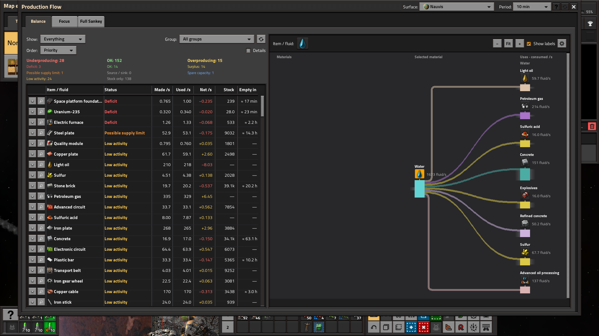
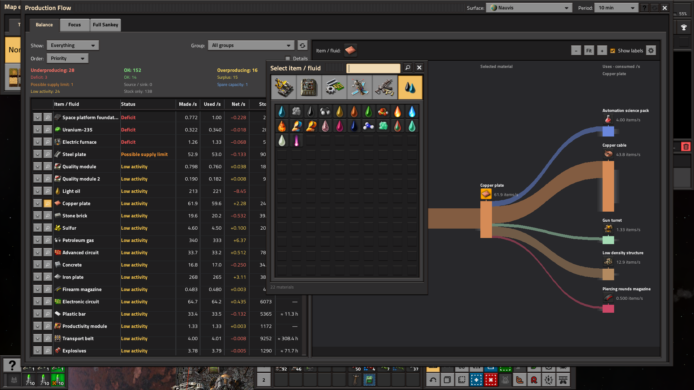
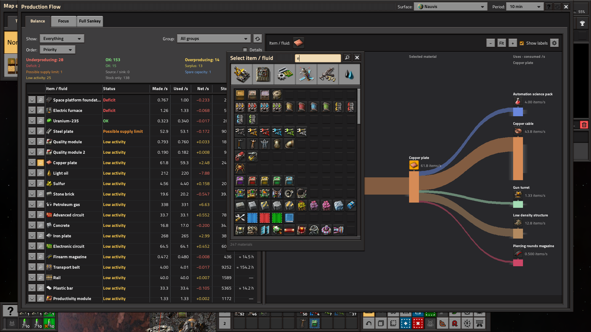
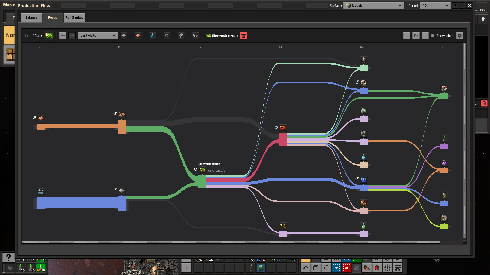
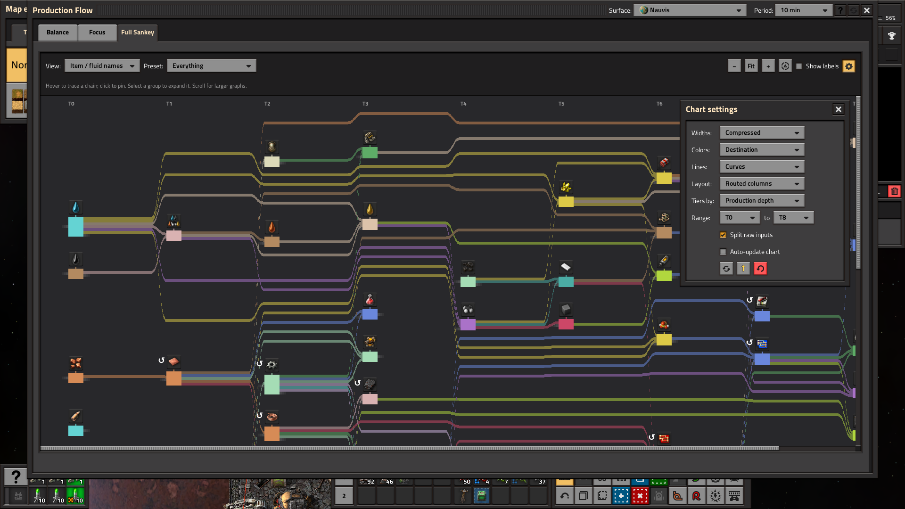

Production Flow 0.1.3 — published UI
Native Factorio 2.1.23 screenshots at 100%. Updated Balance, Focus, material selection and chart settings. Published with 0.1.3.
Balance: aligned single-row headings, scrollbar spacing and header Refresh

Material selector: Fluids section with restored side margins

Material search: scrollbar replaces the right-hand margin on longer lists

Focus: Back/Forward, Last visits, clickable materials and Clear history

Full Sankey: compact controls and chart settings with a bottom inset — needs more polish

Earlier screenshots and validation notes